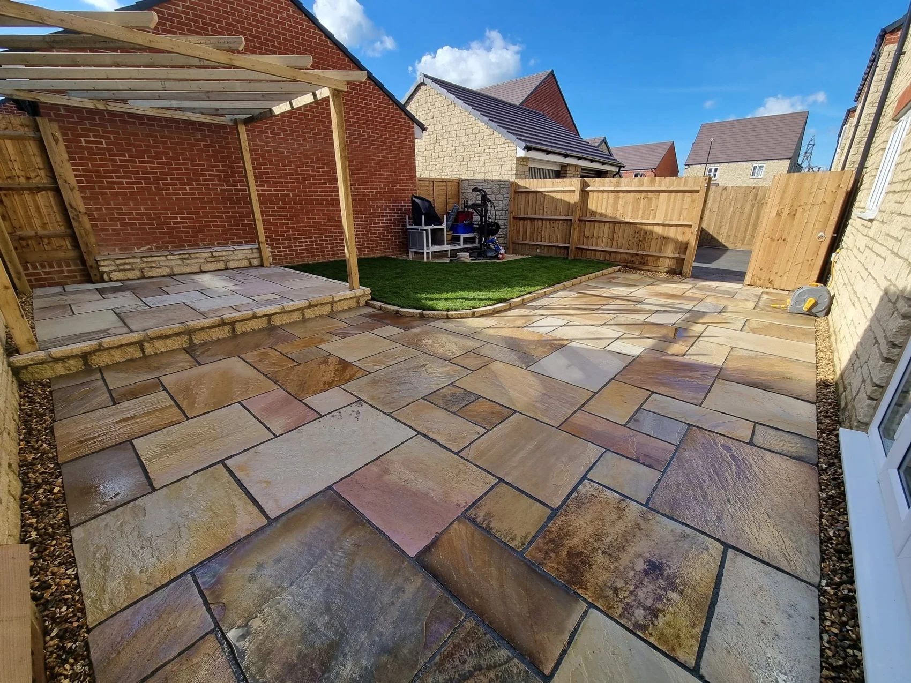
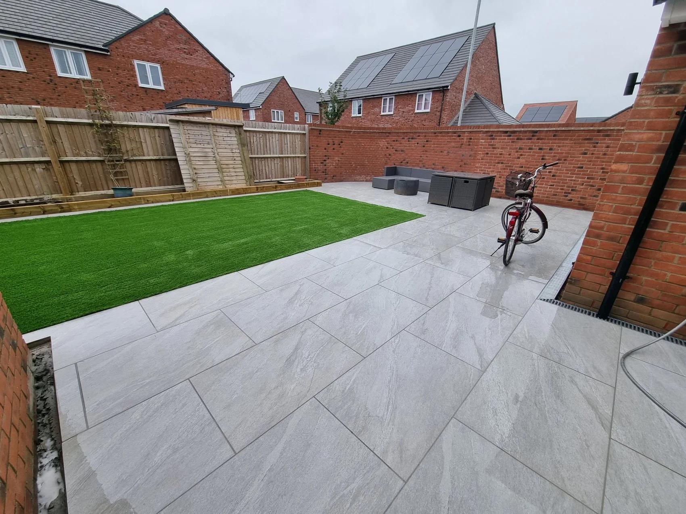
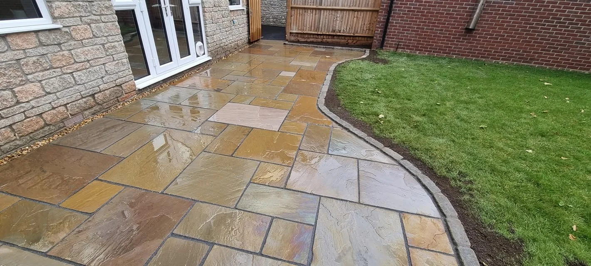
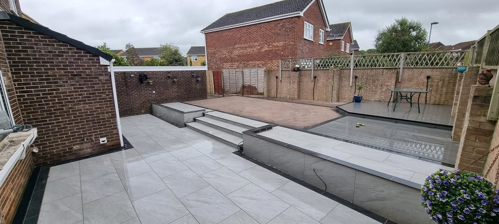
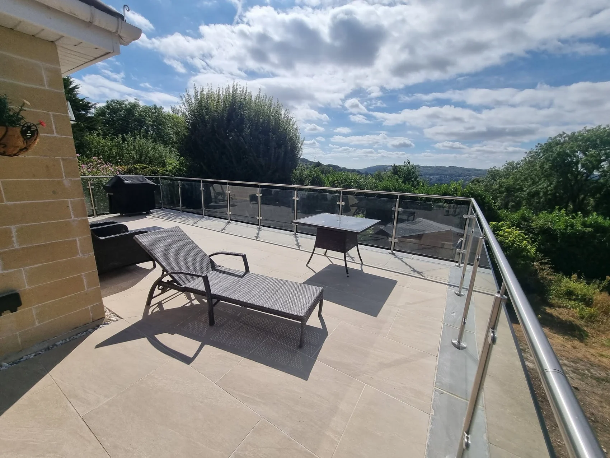
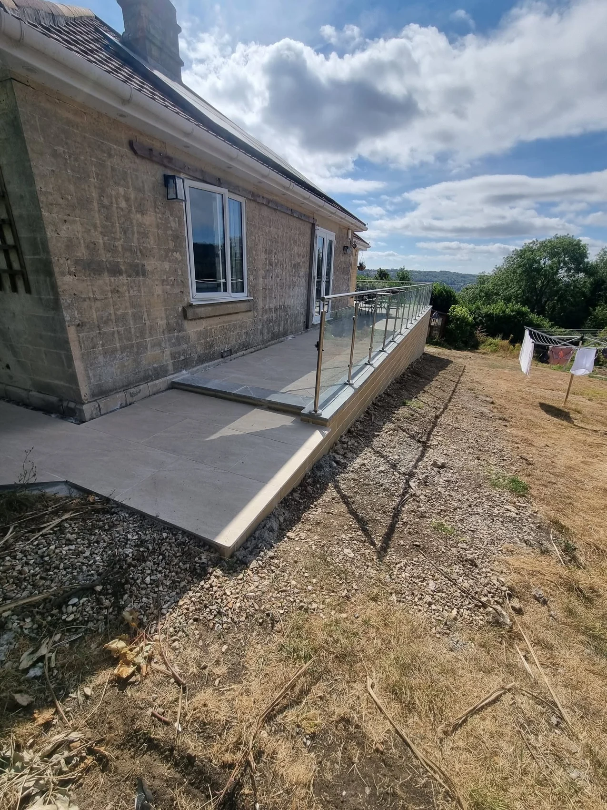

PATIOS, GARDENS & DRIVEWAYS
Make more of the space outside.
Create a place to sit, a clear route to the house or a garden with space for the whole family. See how paving, lawns and boundaries can work together.
Request a quote →

PAVING & OUTDOOR LIVING
Space to sit, paths to get there.
Take a closer look at the curved lawn border and the broad steps in these projects. Both show how paving can connect different parts of a garden.
Explore patios & paving →
RECENT WORK
Paving, lawns and garden details
Explore a few of the team’s projects.
FEATURED PROJECT
From tired decking to a porcelain terrace.
The old deck was replaced with a beige porcelain patio. These two views show the new seating area and the raised paved edge alongside the house.
Explore the terrace project →

WOTTON-UNDER-EDGE · GL12
Local landscaping for everyday use.
T. Griffiths Patios & Gardens takes on patios, driveways, fencing and artificial grass. Get in touch with your postcode and a few photos of the area you want to change.
01
Start with your space
Show us what is there now and what you’d like to keep.
02
See where we work →Talk through the details
Tell us how the finished area needs to work, including access, levels and seating.
REQUEST A QUOTE
Tell us what you want to create.
The form opens WhatsApp with your project details ready to review and send. You can attach photos there.
T. Griffiths Patios & Gardens
Ready to plan your project?
Based in Wotton-under-Edge, GL12